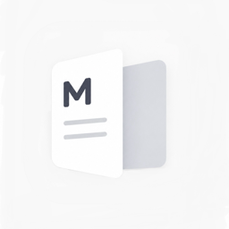

MarkDown
美しく、読む。
Mado（窓）は、iPhone と iPad のための
Markdown プレビュー専用アプリです。書く道具ではなく、読む体験を磨くことに集中しました。
三つの軸
- 美しさ — 余白と行間を整え、文章を「読み物」として扱う
- 速さ — 起動と表示は軽快に
- 日本語 — 和文タイポグラフィにこだわった本文組
主な機能
.md / .markdown ファイルを直接プレビュー- 他アプリからの共有エクステンション（ChatGPT、Claude、Safari 等）
- PDF への書き出し
- 5 つのテーマ（システム / ライト / ダーク / セピア / インク）
- 文字サイズ調整（iOS Dynamic Type 対応）
- GFM 対応（テーブル・タスクリスト・コードブロック等）
買い切り、サブスクなし。一度買えばずっと使えます。